Case 05 of 18 · CINEOSIS
CINEOSIS in the crash lab
Can each of the 45 CINEOSIS signs be staged by the family so a stranger recognises it?
45 signs, 16,742 frames of edit over 59 measured worlds, each judged by an independent critic from eight stills.
How it was made
- For each sign, write a test (what must be seen) and a counterfeit (what would look similar but be wrong).
- Build a world in the bay and cut the sign from it.
- Give a critic eight stills per sign, with no explanation, and ask for MET, WEAK or MISSES.
What this case teaches
- A sign is only staged when it can be told apart from its counterfeit, so the counterfeit is written before the scene.
- The first blind round was severe: 12 met, 26 weak, 7 missed. The value is in the misses, because each names exactly what did not read.
- Disagreements are recorded, not hidden. Where the critic misread (a key taken for a box), the passage was kept and the reason written down.
How it differs. The crash lab measured bodies. This case measures meaning: whether a viewer can read the idea.
What broke and what changed
- Liquid perception: a scale jump read as a cut.Camera height locked; one unbroken move.
- Originary world: no pull of the ground on the body.He sinks into the mud and is gone; the fences fall.
- Figure of the sublime: the trivial need was never shown.The puddle is shown first and last.
- Symbol: the object was never isolated.Ends on the key alone, with no hands.
First sheet and last sheet
Where the stage started and where it finished.


The sheets, step by step
Grouped by working session. Click any sheet to view it full size; use the arrow keys to move through them.


Show 10 more from this step
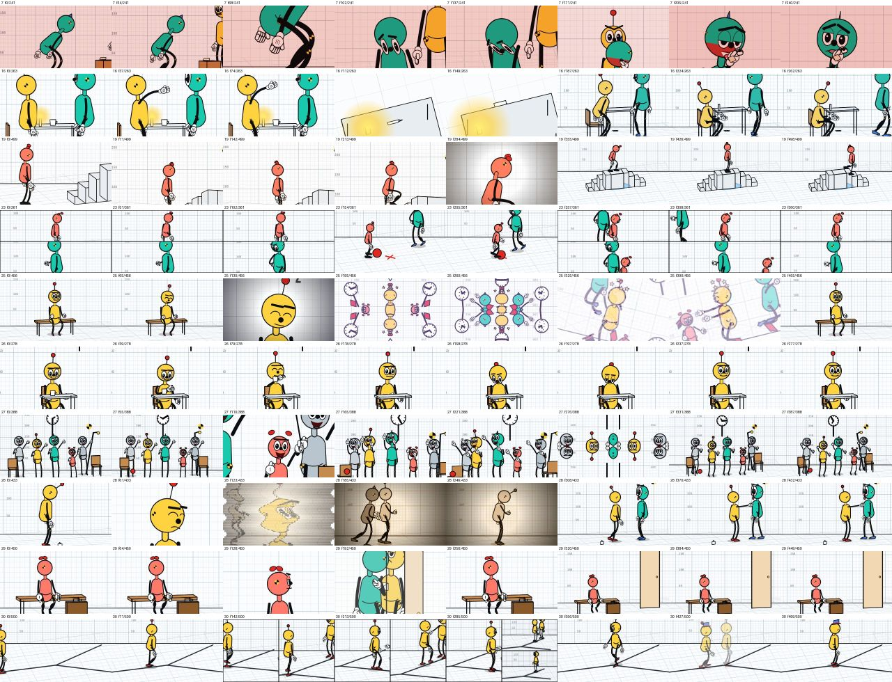
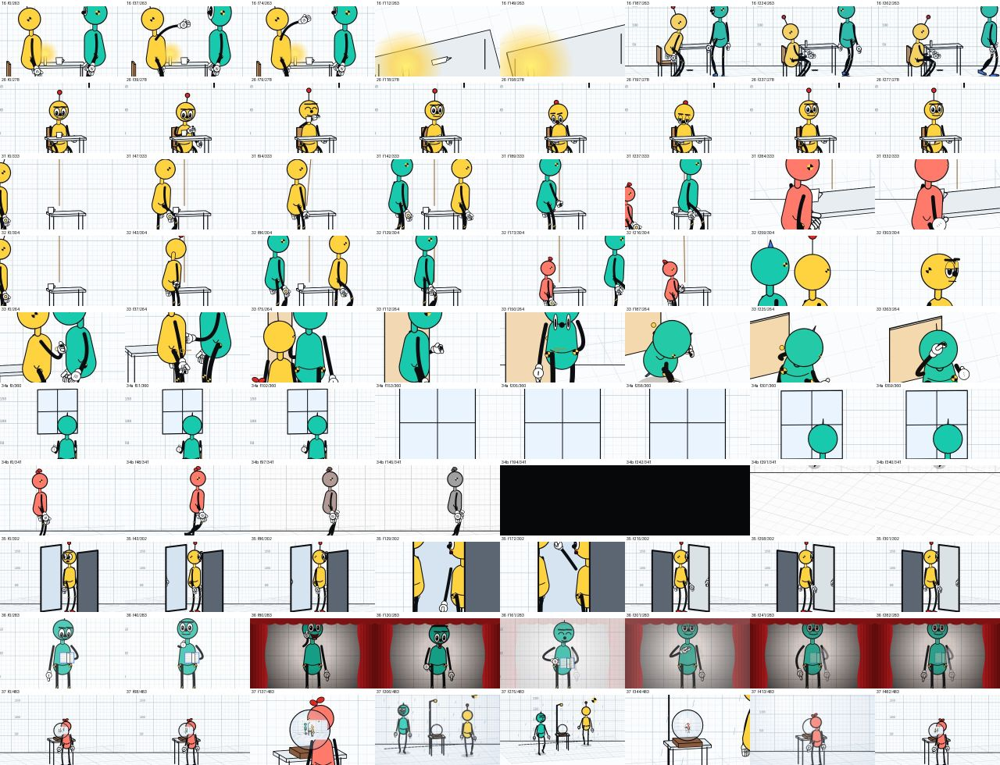


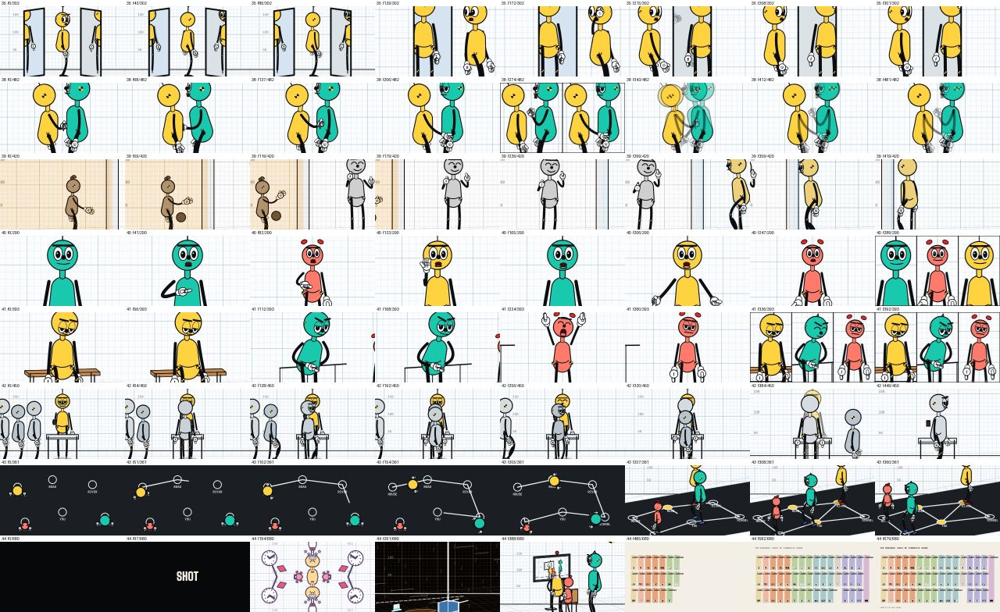


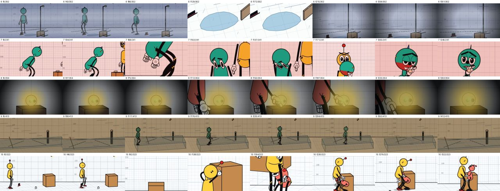
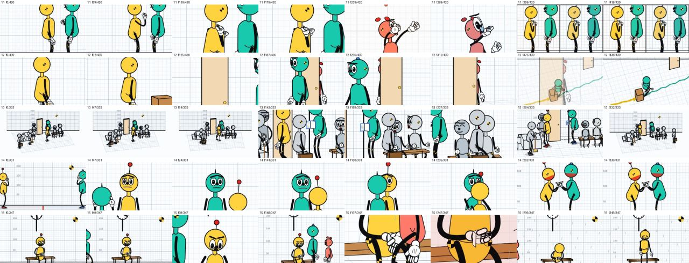
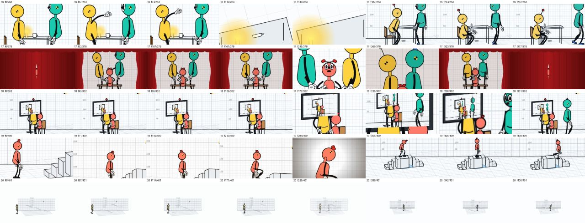
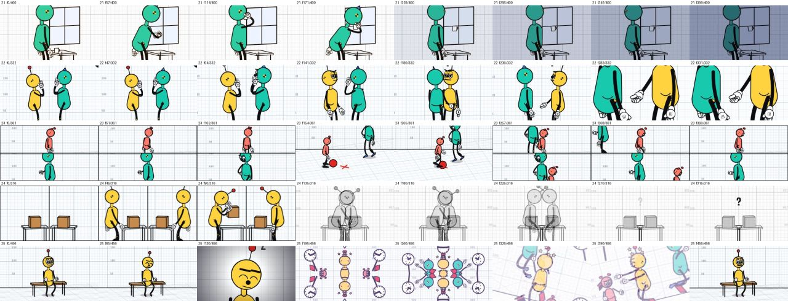
Show 10 more from this step
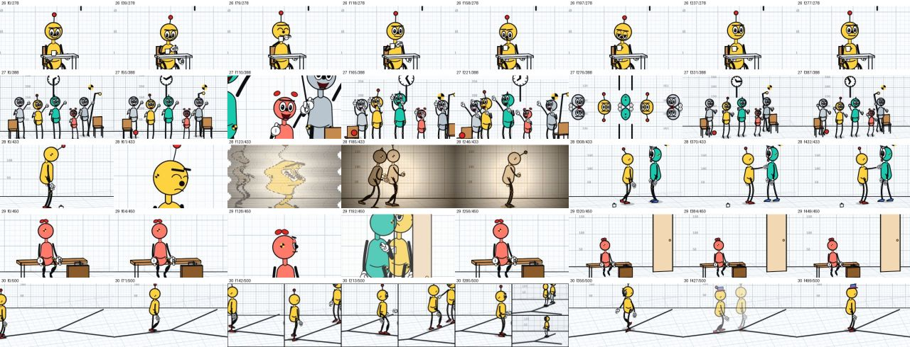


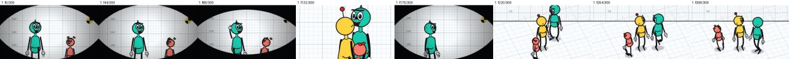
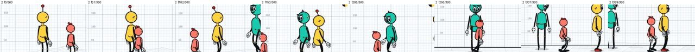
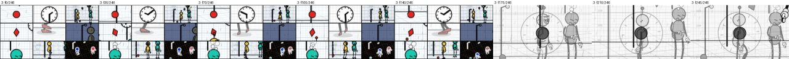
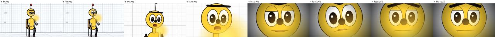
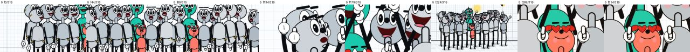
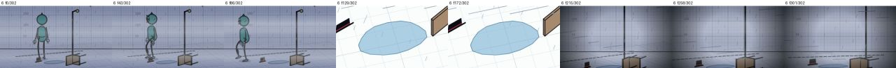
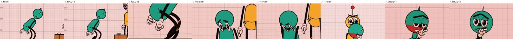
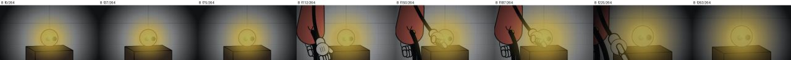
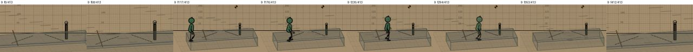
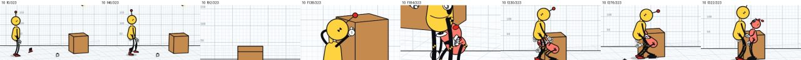
Show 10 more from this step
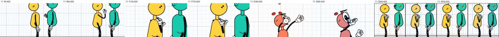
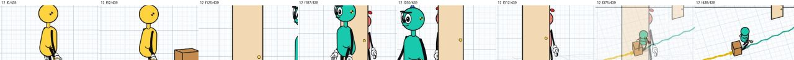
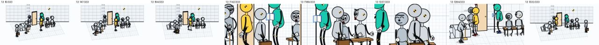
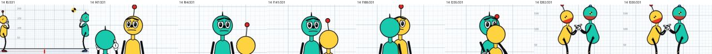
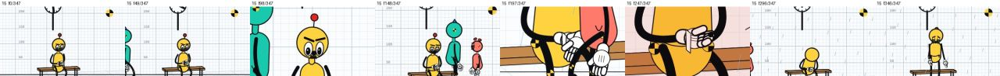

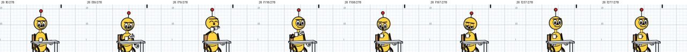
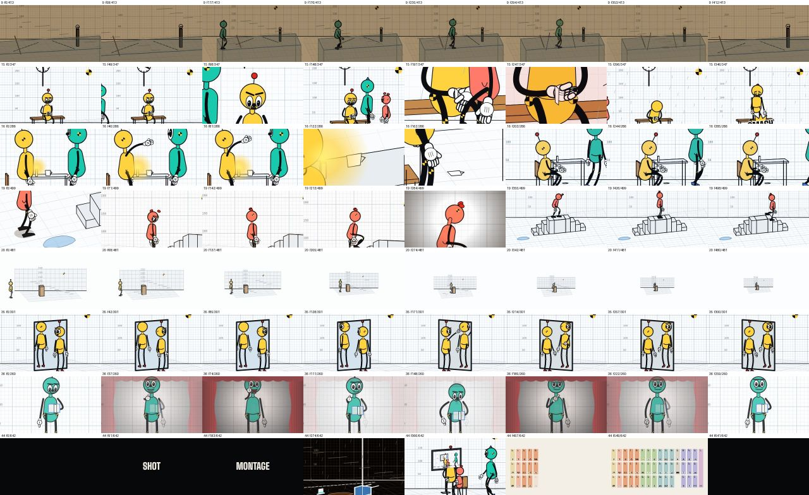
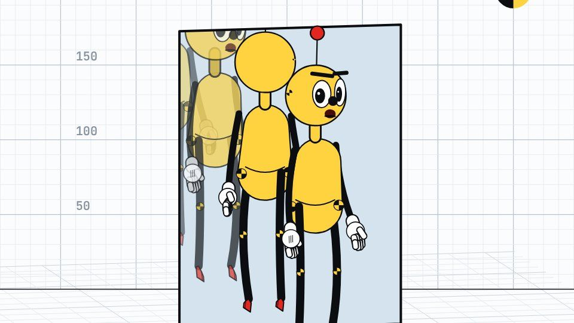
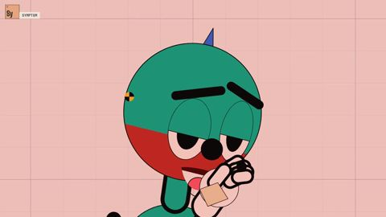
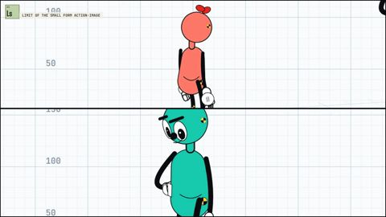
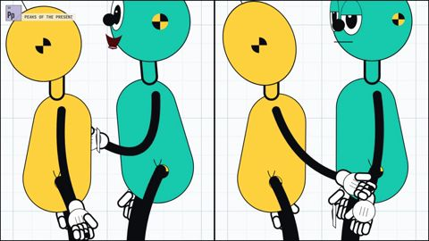
What came out of it


Read the record
Carried forward
The signs are readable in the bay. The next question is whether they survive in real footage.